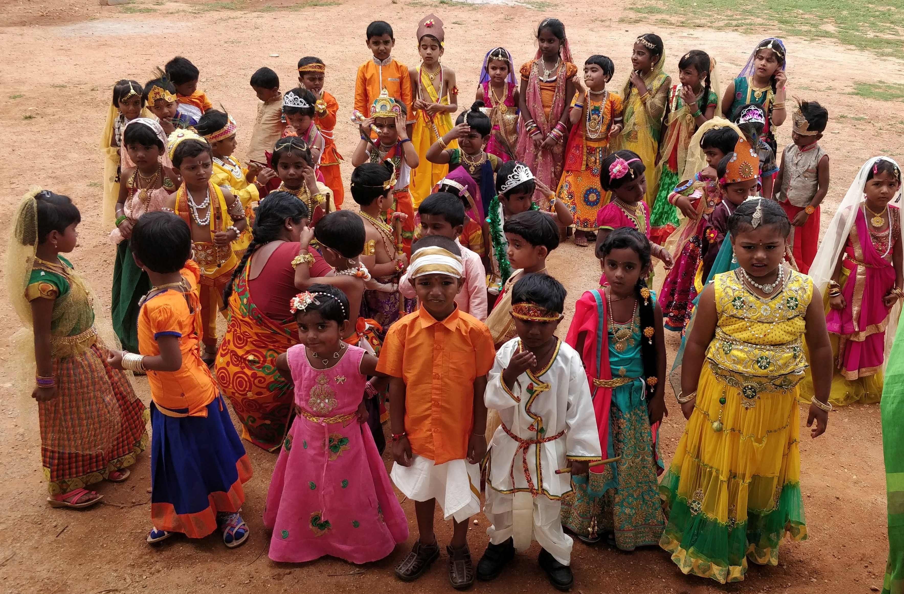

A Critique on Education
The present-day education system has created a social
differentiation. There is a great disparity in the quality of
education the rural children get and the urban children of the elite
get.
A good quality of education for the children of the poor is a key to
overcome inequality in the society.
The education policy makers have flawed assumption about education.
They perceive education from a utilitarian perspective. They ignore
the social purpose of education for emancipation.
Education should not aim at just getting employment. It should aim
at building character, integrity and a capacity to be responsible
citizens, developing cognitive ability, thinking capacity and
problem-solving skill (creativity).
Education has to be seen as public good outside the logic of the
market.
Education should enable all round development of individuals.
Emotional well being of the students is paramount important.
Education should shift from teacher centeredness to learner
centeredness; teacher domination to learner participation; teaching
for learning; from textbook based rote learning to activity based
intelligent learning; from unhealthy competition to happy
collaboration.